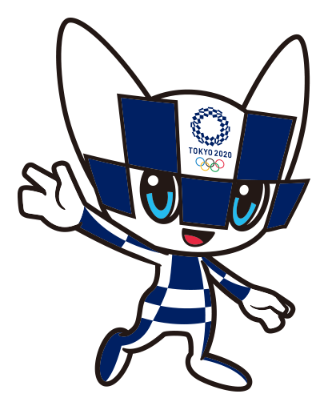
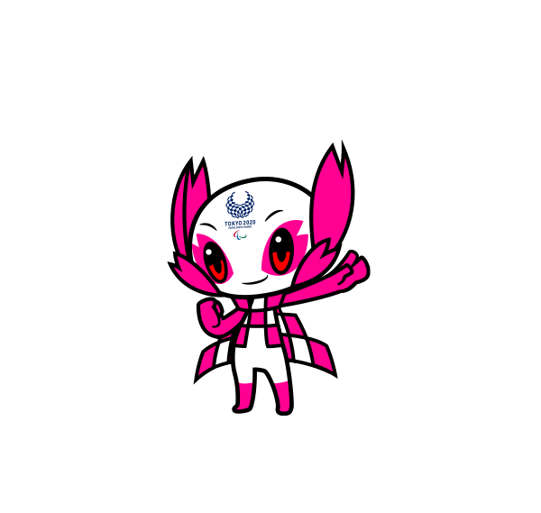

O nome Miraitowa é derivado da palavra japonesa "mirai" que significa futuro e "towa" eternidade.
Miraitowa tem uma personalidade inspirada pelo provérbio Japonês.
"Aprenda com o passado e desenvolva novas ideias."
Miraitowa é alegre e notavelmente atlético. Seu poder especial é de se teletransportar pra qualquer lugar a qualquer hora.
Someity é um personagem bastante interessante, com poderosos poderes e sensores táteis de flor de cerejeira. SOMEITY pode usar os sensores nas laterais da cabeça para obter poderes telepáticos, voar usando sua capa com padrão Ichimatsu e até mover objetos sem tocá-los.
Tem uma presença calma e tranquila, guiada por grande força interior, mas pode exibir superpotências que incorporam a dureza e determinação dos atletas paraolímpicos.
Someity adora estar na natureza e pode se comunicar com elementos naturais, como pedras e o vento.
